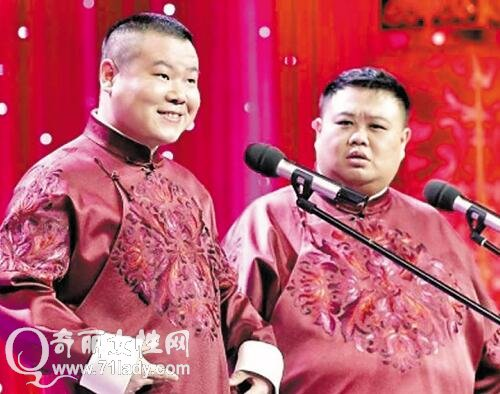

相声
相声（Crosstalk），一种民间说唱曲艺。相声一词，古作象生，原指模拟别人的言行，后发展为象声。象声又称隔壁象声。相声起源于华北地区的民间说唱曲艺，在明朝转变为相声。一种类型的单口相声，后来逐步发展为多种类型：单口相声、对口相声、群口相声，综合为一体。它以说，学，逗，唱为形式，突出其特点。相声在两岸三地有不同的发展模式。
中国相声有三大发源地：北京天桥、天津劝业场和南京夫子庙。相声艺术源于华北，流行于京津冀，普及于全国及海内外，始于明清，盛于当代。主要采用口头方式表演。表演形式有单口相声、对口相声、群口相声等，是扎根于民间、源于生活、又深受群众欢迎的曲艺表演艺术形式。相声鼻祖为张三禄，著名流派有“马（三立）派”、“侯（宝林）派”、“常（宝堃）派”、“苏（文茂）派”、“马（季）派”等。著名相声表演大师有马三立、侯宝林、常宝堃、苏文茂、刘宝瑞等多人。
（1914年10月1日-2003年2月11日）
中国已故相声泰斗，相声八德之一马德禄之子。回族，甘肃省永昌县人。马氏相声雅俗共赏，在天津更是形成了“无派不宗马”的说法。
（1917年11月29日－1993年2月4日）
中国第六代相声演员，著名相声表演艺术家，世纪相声大师，先学演京剧，后改说相声。
1915年－1968年10月6日 ）
北京人，中国相声第六代演员，师从张寿臣。
（1922年5月5日-1951年4月23日）
常宝堃(kūn),艺名“小蘑菇”，河北省张家口市人，相声名家。
姜昆，男，1950年11月19日出生于北京，祖籍山东烟台。毕业于中央电大。中共党员，国家一级演员，相声演员，中国曲艺家协会主席。中国文学艺术界联合会第十届荣誉委员。
牛群，1949年12月出生于天津市，祖籍山东省昌邑市龙池镇齐西村，毕业于中央戏剧学院戏剧文学系。中国第七代相声演员，国家一级演员。
郭德纲，男，出生于1973年1月18日，天津人，相声表演艺术家，电影、电视剧演员，电视脱口秀主持人。

岳云鹏，1985年4月15日出生，河南濮阳人，德云社青年相声演员、中国大陆影视男演员，和孙越、朱云峰、闫云达并称“德云四少”。